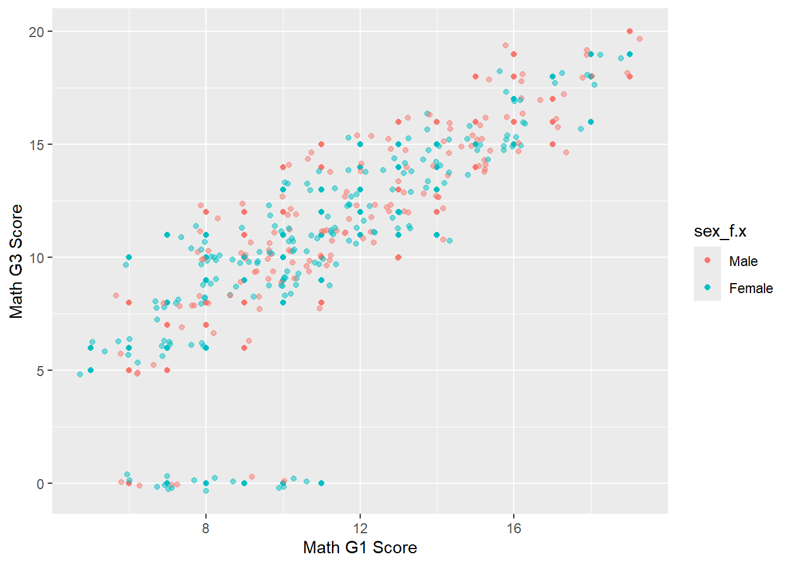
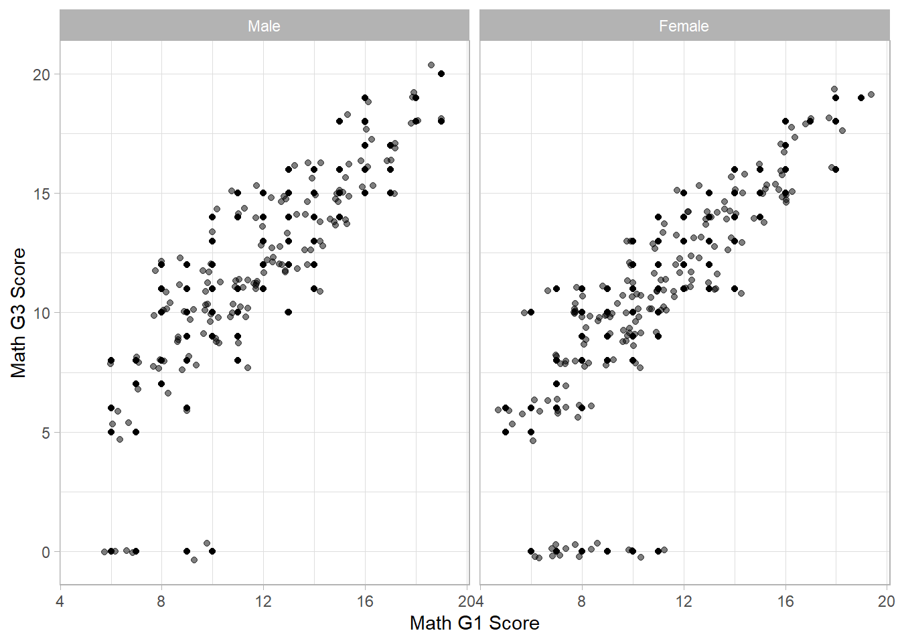

Warning: package 'tidyverse' was built under R version 4.4.3
Warning: package 'ggplot2' was built under R version 4.4.3
Warning: package 'tidyr' was built under R version 4.4.3
Warning: package 'readr' was built under R version 4.4.3
Warning: package 'dplyr' was built under R version 4.4.3
Warning: package 'stringr' was built under R version 4.4.3
Warning: package 'forcats' was built under R version 4.4.3
Warning: package 'lubridate' was built under R version 4.4.3
── Attaching core tidyverse packages ──────────────────────── tidyverse 2.0.0 ──
✔ dplyr 1.1.4 ✔ readr 2.1.5
✔ forcats 1.0.0 ✔ stringr 1.5.1
✔ ggplot2 4.0.0 ✔ tibble 3.2.1
✔ lubridate 1.9.4 ✔ tidyr 1.3.1
✔ purrr 1.0.2
── Conflicts ────────────────────────────────────────── tidyverse_conflicts() ──
✖ dplyr::filter() masks stats::filter()
✖ dplyr::lag() masks stats::lag()
ℹ Use the conflicted package (<http://conflicted.r-lib.org/>) to force all conflicts to become errors
library(psych)
Warning: package 'psych' was built under R version 4.4.3
Attaching package: 'psych'
The following objects are masked from 'package:ggplot2':
%+%, alpha
Read in UCI Data
Initially read in data using provided code including the merge-join based on original 13 variables.
#use r code provided in download... already suitable to read files from project folderd1=read.table("student-mat.csv",sep=";",header=TRUE)d2=read.table("student-por.csv",sep=";",header=TRUE)d3=merge(d1,d2,by=c("school","sex","age","address","famsize","Pstatus","Medu","Fedu","Mjob","Fjob","reason","nursery","internet"))#print(nrow(d3)) # 382 students
Tidyverse Read in Data
Use tidyverse functions to read in data and use original 13 suggested variables as inner join criteria. This leads to a many:many relationship which suggests the 13 field combinations are not specific enough.
The Mat dataset shows student demographic information and test scores from a mathematics class. This is the “LEFT” dataset in the join and data elements exclusive to it end in “.x”
The Por dataset shows student demographic information and test scores from a Portuguese class. This is the “RIGHT” dataset in the join and data elements exclusive to it end in “.y”
#same work done using tidyverse functionsmat <-as_tibble(read_delim("student-mat.csv", delim =";", col_names =TRUE))
Rows: 395 Columns: 33
── Column specification ────────────────────────────────────────────────────────
Delimiter: ";"
chr (17): school, sex, address, famsize, Pstatus, Mjob, Fjob, reason, guardi...
dbl (16): age, Medu, Fedu, traveltime, studytime, failures, famrel, freetime...
ℹ Use `spec()` to retrieve the full column specification for this data.
ℹ Specify the column types or set `show_col_types = FALSE` to quiet this message.
por <-as_tibble(read_delim("student-por.csv", delim =";", col_names =TRUE))
Rows: 649 Columns: 33
── Column specification ────────────────────────────────────────────────────────
Delimiter: ";"
chr (17): school, sex, address, famsize, Pstatus, Mjob, Fjob, reason, guardi...
dbl (16): age, Medu, Fedu, traveltime, studytime, failures, famrel, freetime...
ℹ Use `spec()` to retrieve the full column specification for this data.
ℹ Specify the column types or set `show_col_types = FALSE` to quiet this message.
#result is many:many join - these fields are not specific enoughInitialJoin <-inner_join(mat, por, by =join_by("school","sex","age","address","famsize","Pstatus","Medu","Fedu","Mjob","Fjob","reason","nursery","internet"))
Warning in inner_join(mat, por, by = join_by("school", "sex", "age", "address", : Detected an unexpected many-to-many relationship between `x` and `y`.
ℹ Row 79 of `x` matches multiple rows in `y`.
ℹ Row 79 of `y` matches multiple rows in `x`.
ℹ If a many-to-many relationship is expected, set `relationship =
"many-to-many"` to silence this warning.
This inner join uses all variables EXCEPT G1, G2, G3, paid and absences. The four factor variables are also excluded as join criteria.
#join by every field except response variables#no many:many join messagecombined <-as_tibble(inner_join(mat, por, by =names(select(mat,everything(), -c("G1","G2","G3","paid","absences","health_f","Walc_f","Dalc_f","studytime_f"))) ) )#clear initial imports out of environmentrm(d1,d2,d3,InitialJoin)
Initial EDA
These analyses demonstrate:
The full combined dataset.
Descriptive statistics for all dataset variables. Some of the variables are coded in such a way that many statistics such as the “address” field having a numeric mean.
Two methods are used to find missing data values - there are no missing values for any variable in the dataset.
#view tibble - observe sample of valuescombined
# A tibble: 320 × 46
school sex age address famsize Pstatus Medu Fedu Mjob Fjob reason
<chr> <chr> <dbl> <chr> <chr> <chr> <dbl> <dbl> <chr> <chr> <chr>
1 GP F 18 U GT3 A 4 4 at_home teach… course
2 GP F 17 U GT3 T 1 1 at_home other course
3 GP F 15 U GT3 T 4 2 health servi… home
4 GP F 16 U GT3 T 3 3 other other home
5 GP M 16 U LE3 T 4 3 services other reput…
6 GP M 16 U LE3 T 2 2 other other home
7 GP F 17 U GT3 A 4 4 other teach… home
8 GP M 15 U LE3 A 3 2 services other home
9 GP M 15 U GT3 T 3 4 other other home
10 GP F 15 U GT3 T 4 4 teacher health reput…
# ℹ 310 more rows
# ℹ 35 more variables: guardian <chr>, traveltime <dbl>, studytime <dbl>,
# failures <dbl>, schoolsup <chr>, famsup <chr>, paid.x <chr>,
# activities <chr>, nursery <chr>, higher <chr>, internet <chr>,
# romantic <chr>, famrel <dbl>, freetime <dbl>, goout <dbl>, Dalc <dbl>,
# Walc <dbl>, health <dbl>, absences.x <dbl>, G1.x <dbl>, G2.x <dbl>,
# G3.x <dbl>, health_f.x <fct>, Walc_f.x <fct>, Dalc_f.x <fct>, …
#use describe() to get descriptive statistics on all variablespsych::describe(combined)
This one way contingency table shows the number of students residing in each address type (R= Rural / U=Urban)
#one way contingency tabletable(combined$address)
R U
67 253
Two way and three way contingency
Below are a two way and a three way contingency table. The two way shows the mother’s job by address type. The three way contingency table shows the first two way contingency table with its values split by a 3rd dimension the presence of family educational support (yes/no).
#two way contingency table table(combined$Mjob, combined$address)
R U
at_home 18 26
health 3 27
other 23 93
services 12 63
teacher 11 44
#three way contingency tabletable(combined$Mjob, combined$address, combined$famsup)
, , = no
R U
at_home 7 10
health 1 6
other 11 41
services 2 22
teacher 4 13
, , = yes
R U
at_home 11 16
health 2 21
other 12 52
services 10 41
teacher 7 31
Conditional two way table
These two contingency tables demonstrate multiple ways to subset contingency table data - the first uses a filter function, and the second filters based on the 2nd item of the 3rd array dimension. Both methods return identical data.
#conditional two way table - observe study time by sex where address is rural #create data subset before table()ruraldata <- combined |>filter(address =="U") table(ruraldata$sex, ruraldata$studytime_f.x)
<2 hours 2-5 hours 5-10 hours >10 hours
F 18 78 32 11
M 41 54 10 9
#conditional two way table - observe study time by sex where address is urbantwoway_2 <-table(combined$sex, combined$studytime_f.x, combined$address)twoway_2[,,2] #selecting for urban [sex row, study time column,rural/urban]
<2 hours 2-5 hours 5-10 hours >10 hours
F 18 78 32 11
M 41 54 10 9
dplyr contingency table
Dplyr group_by and summarize functions are used to create counts by weekly alcohol use and health status. This original structure included a row for each combination of the two categorical variables. Pivot wider creates new columns from repeating values from an existing column - Walc_f.x.
#observe count of health status across levels of reported weekly alcohol use#reorient data using pivot_wider()combined |>group_by(health_f.x, Walc_f.x) |>summarize(count =n()) |>pivot_wider(names_from = health_f.x, values_from = count)
`summarise()` has grouped output by 'health_f.x'. You can override using the
`.groups` argument.
# A tibble: 5 × 6
Walc_f.x `very bad` bad neutral good `very good`
<fct> <int> <int> <int> <int> <int>
1 very low 19 12 31 25 41
2 low 10 6 18 9 28
3 0-avg 9 11 11 12 19
4 high 4 4 5 4 22
5 very high 2 1 5 5 7
Initial Bar Plots
Compare stacked with side by side
Two simple bar plots were created to demonstrate the different ways multiple categorical variables can be shown in a bar plot. One shows the total counts for the two groups stacked on top of each other. The other shows the two groups side-by-side, which can be easier to quickly read and interpret.
#stacked bar plotggplot(combined, aes(x = health_f.x, fill = address)) +geom_bar() +labs(title ="Stacked Bar Chart",x ="Health", y ="Observations") +theme_light()
#side by side bar plotggplot(combined, aes(x = health_f.x, fill = address)) +geom_bar(position ="dodge") +labs(title ="Side by Side Bar Chart", x ="Health", y ="Observations") +theme_light()
Numeric Variables
5 measures of center and spread: mean, median, variance, standard deviation, and interquartile range were used to describe three numeric variables (student age, mathematics class absences, and the final G3 mathematics assessment score.
#Measures of Center and Spreadfxlist <-list("mean"= mean, "median"= median, "var"= var, "sd"= sd, "IQR"= IQR)MeasureAndSpread1 <-list(combined |>summarize(across(age,.fns = fxlist,.names ="{.col}_{.fn}")),combined |>summarize(across(absences.x,.fns = fxlist,.names ="{.col}_{.fn}")),combined |>summarize(across(G3.x,.fns = fxlist,.names ="{.col}_{.fn}")))MeasureAndSpread1
The tables below take a similar approach to the first but have added a grouping variable, school. This helps one understand differences in students across the schools.
#Overall age absences and G3 across schoolMeasureAndSpread2 <-list(combined |>group_by(school)|>summarize(across(age,.fns = fxlist,.names ="{.col}_{.fn}")),combined |>group_by(school)|>summarize(across(absences.x,.fns = fxlist,.names ="{.col}_{.fn}")),combined |>group_by(school)|>summarize(across(G3.x,.fns = fxlist,.names ="{.col}_{.fn}")))MeasureAndSpread2
[[1]]
# A tibble: 2 × 6
school age_mean age_median age_var age_sd age_IQR
<chr> <dbl> <dbl> <dbl> <dbl> <dbl>
1 GP 16.4 16 1.21 1.10 1
2 MS 17.8 18 0.360 0.600 1
[[2]]
# A tibble: 2 × 6
school absences.x_mean absences.x_median absences.x_var absences.x_sd
<chr> <dbl> <dbl> <dbl> <dbl>
1 GP 5.64 4 65.7 8.10
2 MS 3.42 2 20.7 4.55
# ℹ 1 more variable: absences.x_IQR <dbl>
[[3]]
# A tibble: 2 × 6
school G3.x_mean G3.x_median G3.x_var G3.x_sd G3.x_IQR
<chr> <dbl> <dbl> <dbl> <dbl> <dbl>
1 GP 11.2 11 18.3 4.27 5
2 MS 9.88 10 19.7 4.44 4
Below the same information is repeated with a subset for the GP school.
#subset for GP schoolcombinedgp <-filter(combined,school =="GP")MeasureAndSpread3 <-list(combinedgp |>summarize(across(age,.fns = fxlist,.names ="{.col}_{.fn}")),combinedgp |>summarize(across(absences.x,.fns = fxlist,.names ="{.col}_{.fn}")),combinedgp |>summarize(across(G3.x,.fns = fxlist,.names ="{.col}_{.fn}")))MeasureAndSpread3
Two categorical values: reason the student chose their school and the school they chose, are used to group descriptive statistics.
#Measures across two variables: reason for choosing school and the school that was chosen. MeasureAndSpread4 <-list(combined |>group_by(reason, school)|>summarize(across(age,.fns = fxlist,.names ="{.col}_{.fn}")),combined |>group_by(reason, school)|>summarize(across(absences.x,.fns = fxlist,.names ="{.col}_{.fn}")),combined |>group_by(reason, school)|>summarize(across(G3.x,.fns = fxlist,.names ="{.col}_{.fn}")))
`summarise()` has grouped output by 'reason'. You can override using the
`.groups` argument.
`summarise()` has grouped output by 'reason'. You can override using the
`.groups` argument.
`summarise()` has grouped output by 'reason'. You can override using the
`.groups` argument.
MeasureAndSpread4
[[1]]
# A tibble: 8 × 7
# Groups: reason [4]
reason school age_mean age_median age_var age_sd age_IQR
<chr> <chr> <dbl> <dbl> <dbl> <dbl> <dbl>
1 course GP 16.4 16 1.07 1.03 2
2 course MS 17.8 18 0.386 0.622 1
3 home GP 16.4 16 1.10 1.05 1
4 home MS 17.9 18 0.411 0.641 0.25
5 other GP 16.4 16 2.35 1.53 1
6 other MS 18 18 0.286 0.535 0
7 reputation GP 16.4 16 1.23 1.11 1
8 reputation MS 17.4 17 0.3 0.548 1
[[2]]
# A tibble: 8 × 7
# Groups: reason [4]
reason school absences.x_mean absences.x_median absences.x_var absences.x_sd
<chr> <chr> <dbl> <dbl> <dbl> <dbl>
1 course GP 4.41 2 25.1 5.01
2 course MS 2.08 0 16.8 4.10
3 home GP 7.24 4 140. 11.9
4 home MS 4.75 4 19.4 4.40
5 other GP 6.09 5.5 25.0 5.00
6 other MS 3 2.5 11.7 3.42
7 reputat… GP 5.58 4 54.2 7.36
8 reputat… MS 5.2 2 51.7 7.19
# ℹ 1 more variable: absences.x_IQR <dbl>
[[3]]
# A tibble: 8 × 7
# Groups: reason [4]
reason school G3.x_mean G3.x_median G3.x_var G3.x_sd G3.x_IQR
<chr> <chr> <dbl> <dbl> <dbl> <dbl> <dbl>
1 course GP 10.4 11 21.8 4.67 4.75
2 course MS 10.1 10 21.0 4.58 4
3 home GP 11.1 11 18.0 4.24 5
4 home MS 10.4 10 9.98 3.16 2.25
5 other GP 12.1 12 13.8 3.71 5
6 other MS 9.5 10.5 18.6 4.31 3
7 reputation GP 12.0 12 13.9 3.73 5
8 reputation MS 9.2 10 48.7 6.98 5
Correlation Matrix
correlation matrix of three target variables
The correlation matrix below shows how three numeric variables: age, mathematics absences, and final mathematics assessment are correlated with each other. There are no particularly strong linear associations between the three variables.
combined |>select(age, absences.x, G3.x) |>cor()
age absences.x G3.x
age 1.0000000 0.14392517 -0.20603186
absences.x 0.1439252 1.00000000 -0.02811847
G3.x -0.2060319 -0.02811847 1.00000000
correlation matrix for all numeric variables in combined dataset
For reference, a correlation matrix can easily be computed for all numeric variables in the dataset by taking advantage of the where(is.numeric) function. To properly interpret these some of these correlations prior knowledge is needed as some are discrete numerical values and others may be coded numeric values that represent categorical or ordinal data.
# using technique of naming ggplot object and calling in later steps#g <- ggplot(combined, aes(x = absences.x, fill = sex))#g + geom_histogram( bins = 10, position = "dodge") + # geom_density(alpha = .4) + # labs(x = "Math Absences")
Scatterplot Analyses
Scatterplot 1 Math G3 Scores by Math Absences by school
In the scatterplot below, each dot represents a student’s unique combination of school they attend, mathematics absences and math G3 score. What school they attended is noted by their dot color.
Most students had below 20 absences, and those with more tended to score worse on the assessment. Students in the MS school had fewer absences as a group than those in the GP school and they account for none of the outliers.
gs <-ggplot(combined, aes(x = absences.x, y = G3.x, color = school))gs +geom_point() +geom_jitter(alpha =0.5) +labs(x ="Math Absences", y ="Math G3 Score")

Scatterplot 2 Math G3 Scores by Math G1 Scores by Sex
This scatterplot shows a strong linear relationship between the mathematics G1 score and the mathematics G3 score. Dot color denotes sex. The relationship appears consistent across sex.
gs2 <-ggplot(combined, aes(x = G1.x, y = G3.x, color = sex))gs2 +geom_point() +geom_jitter(alpha =0.5) +labs(x ="Math G1 Score", y ="Math G3 Score")
Scatterplot 2 Math G3 Scores by Math G1 Scores by Sex
gs2 <-ggplot(combined, aes(x = G1.x, y = G3.x, color = sex))gs2 +geom_point() +geom_jitter(alpha =0.5) +labs(x ="Math G1 Score", y ="Math G3 Score")

Scatterplot with facet
This plot shows a different presentation of the above information. Instead of each dot being a distinct color - males and females have their own scatterplot side by side. The male scores appear slightly more widely dispersed than the female scores.
More than one categorical value can be used to research the G1 to G3 relationship. The 2x2 plot below shows this relationship by sex and by school. The same positive linear relationship is seen across all quadrants though the GP school has many more data points.